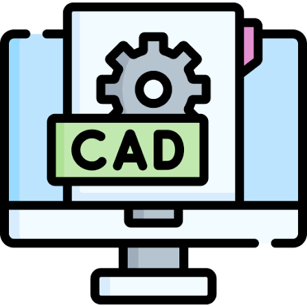

Hard Skills
This is an overview of my hard skills, which I have developed through the projects listed in my project portfolio, as well as through classes and other life experience.
Coding
I am familiar with:
- - Python
- - C/C++
- - Java
- - HTML/CSS
- - MATLAB

Digital Design
I am familiar with a variety of digital design software, primarily CAD software, such as OnShape and SolidWorks. I was the primary designer for the mechanical arm, and the autonomous robot, both of which are shown in this project portfolio.